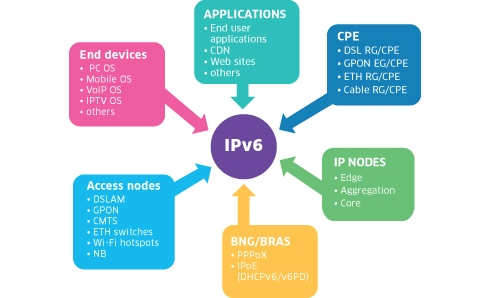

Načini IPv6 adresiranja :
Postoje 3 osnovna načina IPv6 adresiranja:
-
1. Jednoodredišno adresiranje (eng. unicast) Adresiranje jednog mrežnog sučelja, unutar dosega odgovarajućeg tipa jedinične adrese, naziva se jednoodredišno adresiranje. Takvi adresirani paketi isporučuju se jednom mrežnom sučelju pa se ovaj tip adresiranja koristi kod 1:1 komunikacije.
-
2. Višeodredišno adresiranje (eng. multicast) Istovremeno adresiranje većeg broja mrežnih sučelja ostvaruje se višeodredišnim adresiranjem. Takvo se adresiranje koristi kod 1:N komunikacije, gdje se isti paket dostavlja svim adresiranim mrežnim sučeljima.
-
3. Adresiranje „najbliže“ adrese (eng. anycast) Ovaj tip adrese adresira jedinstveno mrežno sučelje, pri čemu se paket dostavlja sučelju koje je „najbliže“ odredišnoj adresi. Pojam „najbliže“ određen je usmjerivačkom metrikom. Ovaj se tip adresiranja koristi kod komunikacije 1:(1 od N). Valja primijetiti kako, neovisno o načinu adresiranja, IPv6 adrese označuju sučelja, a ne mrežne čvorove (računala). Mrežni čvor je određen bilo kojom jednoodredišnom (eng. unicast) adresom dodijeljenoj jednom od njegovih mrežnih sučelja. Dodatno, arhitektura adresiranja IPv6 protokola, definirana RFC normom 3513, ne zahtjeva univerzalnu (eng. broadcast) adresu kao što je to slučaj kod IPv4 protokola.

Važno je primijetiti kako, neovisno o načinu adresiranja, IPv6 adrese označuju sučelja, a ne mrežne čvorove (računara). Mrežni čvor je određen bilo kojom jednoodredišnom (eng. unicast) adresom dodijeljenoj jednom od njegovih mrežnih sučelja. Dodatno, arhitektura adresiranja IPv6 protokola, definirana RFC normom 3513, ne zahtjeva univerzalnu (eng. broadcast) adresu kao što je to slučaj kod IPv4 protokola.